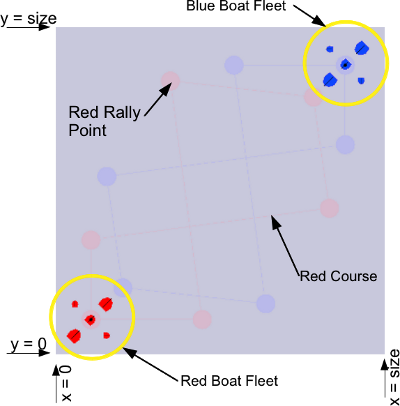
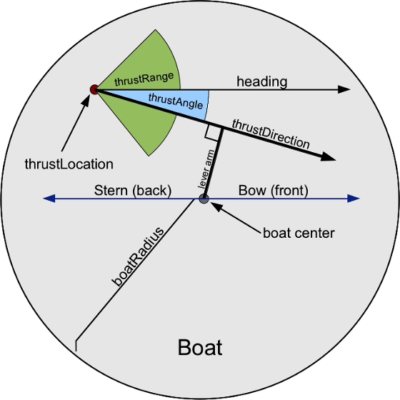
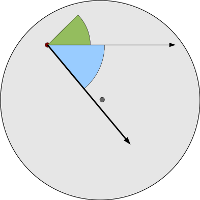

The game of ICPC Bumper Boat Rally is a two-player game, where a red and a blue player each try to complete laps in an aquatic race course. Each player controls five boats of various configuration, one of which holds the baton. The race course is defined as a sequence of rally points. The player completes a lap by piloting the boat with the baton to each rally point in sequence. The player's score reflects how many laps have been completed and how many rally points have been reached.
A match of ICPC Bumper Boat Rally proceeds through a series of 900 turns. At the start of each turn, both players are given a description of the current state of the game. Then, both players must choose how to steer each of their five boats and whether or not to pass the baton among boats. Based on the player's chosen move, the game updates the speed, movement direction, heading and rotation speed for all boats and then simulates one turn of movement for all boats. During turn simulation, boats may bump into each other and reach rally points. At the end of turn simulation, boats get pushed back toward the course if they have moved out of the playing field, and they slow down a little bit as a result of friction.
The following figure illustrates the playing field for ICPC Bumper Boat Rally. The playing field is a square region of water. The boats are drawn with a line down the middle to indicate the current heading. The boat with the baton is indicated by a little dot in the middle. The size of the field, the boat configurations and the sequence of rally points on the course vary from match to match. These parameters are all given to the player at game startup. The field size will be between 60 and 200 units square, and the course will have between 2 and 20 rally points. Multiple rally points may be coincident.
The playing field uses a two-dimensional floating point coordinate system, with X = 0 at the left edge and Y = 0 at the bottom edge. The coordinates of the top and right edges are determined by the field size.
Each player has control of a fleet of five playing pieces called boats. A boat is modeled as a circle with a radius and a mass that depend on the boat configuration. The center of this circle is considered the location of the boat. Each boat maintains a current location, a movement velocity vector, a current heading and a rotation speed. A boat's velocity is expressed as distance moved (in game units) per turn. The boat's heading is defined in radians, measured counter-clock-wise from the positive X axis. Rotation speed is measured in radians per turn. Boats bounce elastically off of other boats, with no transfer of rotational momentum. At the edges of the field, a force is applied to keep boats from sailing out into open water.
Boats come in different configurations. Some may be propelled by an outboard motor at the rear of the craft. Others may have a nozzle near the front. Some may even have a source of propulsion that is off-center. For each turn, the player controls each boat by choosing whether or not to apply thrust and which way to direct the thrust.
The figure below illustrates a boat and how thrust affects its velocity and rotation. Here, the boat is shown with a heading of zero; the front of the boat is pointing in the direction of the positive X axis. The location of the boat's thrust is defined as an ( X, Y ) displacement from the boat center. This may be located anywhere within the boat's circular outline (except the absolute center). When thrust is applied, it is directed by a player-selected thrustAngle clockwise (negative) or counter-clockwise (positive) relative to the boat's current heading. The boat's thrustRange parameter, a positive angle given in radians, limits how far the thrustAngle can be turned relative to the boat's heading. If the player gives a thrustAngle that's outside the range [ -thrustRange, thrustRange ] it is clamped to this range before before the move is applied.
At the start of a turn, the player decides whether or not to apply thrust for each boat. Each boat has a thrustStrength, defined as a change in velocity per turn. If thrust is applied, some of it may contribute to moving the boat through the water, and some may contribute to turning the boat. The simulation doesn't handle this in a way that's completely faithful to Newtonian Physics, but it does yield a simulation that's reasonably interesting to watch. As illustrated above, the thrustLocation and the thrustAngle determine a thrustDirection for the boat. The length of the lever arm, is defined as the perpendicular distance between the thrustDirection and the center of the boat. The ratio of the lever arm length to the boat radius, r = | leverArm | / boatRadius, determines how much thrust goes into rotation vs linear motion. At the start of a turn, a boat's velocity is modified by adding the vector thrustStrength * ( 1 - r ) * v, where v is a unit vector pointing in the thrustDirection. The boat's rotation speed is modified by adding or subtracting a scalar, r * thrustStrength / ( 2 * π * boatRadius ). The sign of the change in rotation speed is based on whether the thrustDirection vector passes by the boat center in a clockwise or a counter-clockwise direction. In the figure above, the thrustDirection vector is pointing clockwise compared to the boat center, so the quantity r * thrustStrength / ( 2 * π * boatRadius ) would be subtracted from the boat's rotation speed. As illustrated below, if a much larger (negative) thrustAngle was given for this boat, the thrustDirection would have passed below the boat center and thrust would have contributed to counter-clockwise rotation instead.
All boats will have a radius between 1 and 4 units, and a mass between 25 and 500 units. The thrustStrength of a boat will be between 0.25 and 2.0. The thrust location will always be inside the boat. The thrustRange parameter will be greater than zero and less than or equal to π, and it will always make it possible to turn the boat in both directions (although a boat may be able to make sharper turns in one direction than the other).
At the start of a game turn, the player may choose to pass the baton from one boat to another. If boat A has the baton, and its center is within 10 units of the center of some other boat B at the start of the turn, the player may pass the baton to boat B. Passing of the baton takes place immediately, before any boat movement for that turn is simulated.
All boat velocities and rotation speeds are set to zero at the start of a match. Boats are indexed from zero to 4, and boat zero starts out holding the baton. Other game parameters depend on the particular course, and are given to the player at startup.
The initial configurations of the red and blue player are identical under a 180-degree rotation about the field center. This includes the location of the rally points, and the configurations and locations of all boats. Boats, either on the same team or opposing teams, will never start out with their hulls intersecting.
Beyond the edges of the playing field, a force is applied to keep boats from completely leaving the course. This is applied at the end turn simulation, after all movement has occurred. If a boat is i units past the left edge of the field, the X component of the boat's velocity will have 0.5 i added to it. A similar acceleration is applied for the other three edges of the field. For example, if a boat is at position ( -2, -1 ) at the end of a simulation step, and it's velocity is ( -1, -3 ), the velocity will be changed to ( 0.0, -2.5 ) before the start of the next turn.
Boats are subject to friction. At the end of turn simulation, after acceleration due to the field boundary has been applied, friction is applied to boat velocity and rotation speed. The movement speed of each boat is reduced by a factor of 0.25, while keeping the movement direction the same. Likewise, rotational speed is reduced by a factor of 0.25. For example, if a boat is moving with a velocity of ( 2, 1.5 ) and a rotation speed of -0.5 at the end of turn simulation, friction will reduce this to a velocity of ( 1.5, 1.125 ) and a rotation speed of -0.375 before the start of the next turn. If a boat's movement speed or the magnitude of its rotational speed drops below 0.00001, it is set to zero.
Moving objects may collide with each other and boats may reach rally points at any time during turn simulation. Although players only see instantaneous snapshots of the game state at the beginnings of the turns, events like collisions may occur at intermediate times between these snapshots.
Each boat has a mass that's part of it's configuration. The boat's mass doesn't affect how it is piloted, but it does influence what happens when boats collide. Boat collisions are elastic. If a heavy boat hits a light one, the light boat will experience a greater change in velocity than the heavy one. Boat rotation speeds are not affected by collision.
Players earn points by completing laps, touching rally points and passing the baton between boats. A successful pass of the baton earns one point. A player completes a lap by touching each rally point on the course in sequence, from the first point to the last point. Players touch rally points by piloting the baton-holding boat so that it's center is within 3 units of the rally point center. Touching a rally point will be registered even if the boat passes within 3 units only temporarily, during the simulation of a game turn. Touching a rally point earns the player 20 points, and completing a lap earns an additional 200 points.
At the end of the game, the player with the highest score is the winner. If there is a tie in the score, the player who has piloted their boats the greatest total distance wins.